Look at Me!
The Concept: Look at Me!
We crave attention. We have the need to be noticed, to be seen.
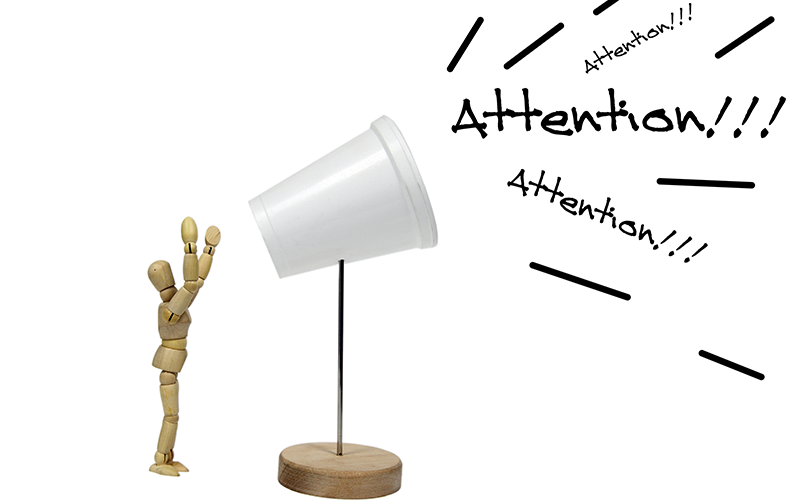The value of being minimal
The 80s and 90s brought us opulence and flamboyance. To flaunt was a sign of prosperity and aesthetic pleasure.
Bright neon shades, vibrant hues - Colors were admiringly utilized everywhere. Heck, logos even incorporated the rainbow in itself.
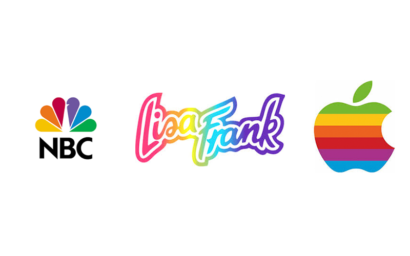Later on, design makes a paradigm shift into minimalism.
What changed?
It is a reaction to the excess that the world has worked so hard to amass. Minimalism is taking out the clutter and leaving only the essentials.
What we end up with are sleek looking polished devices but dull and uninspiring.
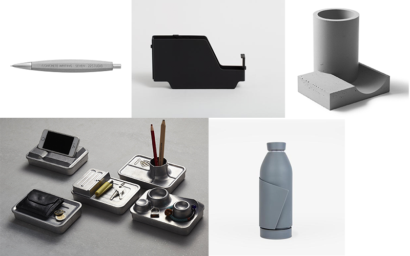 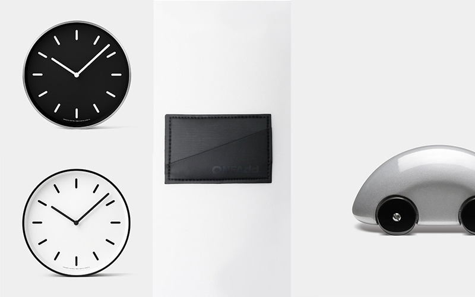The need for some Sticky Business
One of Dieter Ram’s tenets, a former designer of Braun is that:
Good design should be invisible
This means doing away with the superfluous. Keeping things to a minimum and only things that need to be there should be there.
This design philosophy brings forth items that are nothing less than gorgeous but at the same time, may appear soulless.
In the race towards efficiency and usability, we have lost the humanity of things. This is however not a knock on efficiency, attention to detail and beauty.
Sticky business is not against the race for efficiency but aims to restore the element of human touch again amidst the sea of mass produced identical items.
Let’s add stickers, let’s add joy.
We add stickers to our belongings mainly to express our individualism. It is a testimony to who they are and sometimes what we believe in.
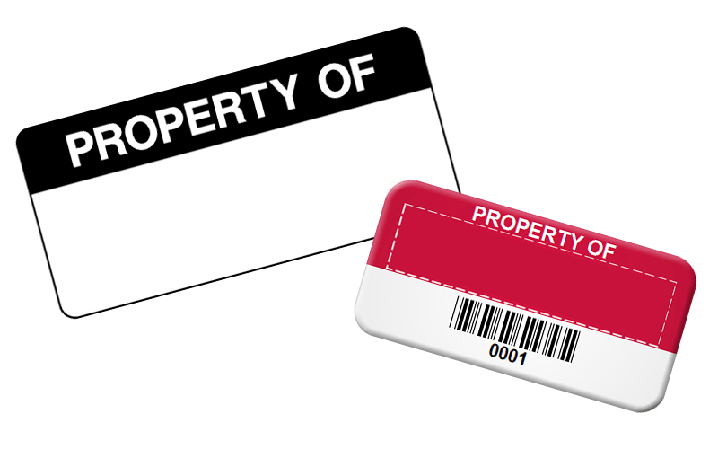Labelling our items is a reflection of ourselves, needless to say, just plainly letting people know that that thing is yours. Stickers are a cost effective way of expressing oneself.
Sticker is life
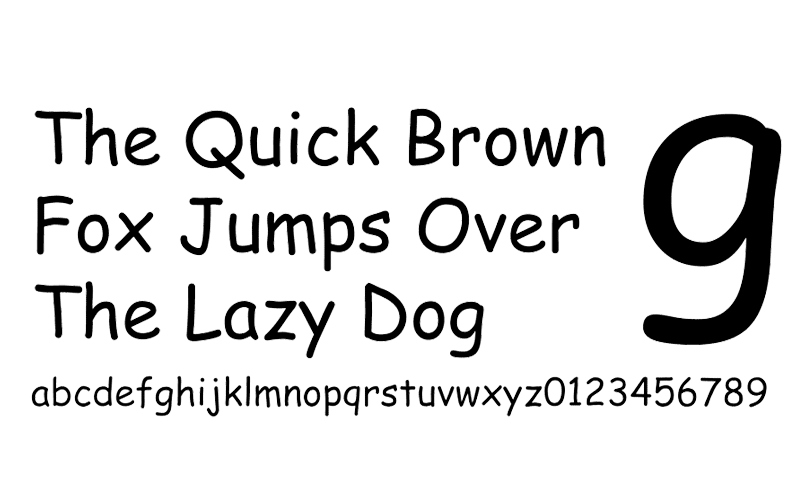Kids and kids at heart can attest that decorating a valued item is nothing but a pure joyful moment.
We decorate our homes because we value it a lot.
Same goes with items that we love, use and see everyday.
The logo design tries to mirror that joyful moment when we apply the sticker on an item, where i have absolute control over that moment.
Logo — Stick ‘em up
The main audience of Sticky Business will be people who just want to get things done - deliver the message. Just like luxury brands do so.
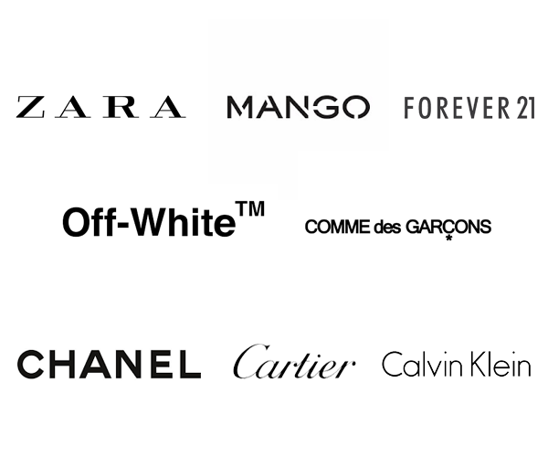A word mark will be the best approach since it jumps ahead from all the deciphering and figuring out what the logo is about.
A word mark would be the most efficient way to proceed since the logo should achieve 3 things :
- Communicate the name.
- Inform what the business will be all about.
- Convey that sticky business is a fun<> business.
While we use an off-the shelf typeface as opposed to crafting our own, incorporating a sticker-like /i personalizes this approach to make it STICKY BUSINESS' business.
Why the /i?
Because “I am me. I am my own." What better way to have it pop? Make it stick out!
Peel. Stick. Enjoy.
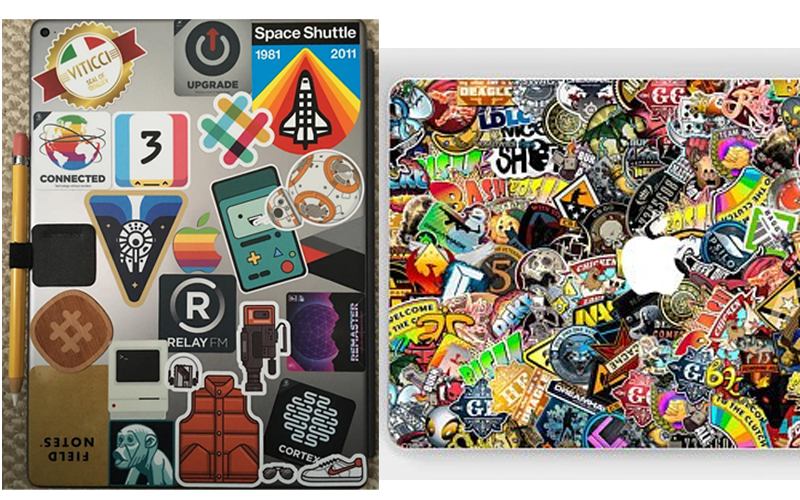Typography
If the logo is the face, then typography is the voice.
We choose Mikado because according to its creator, HVD Type — Mikado: The typeface for kids, games and ice cream.
From HVD Font Foundry:
> Mikado is intended to be used everywhere where a pleasant feeling should be conveyed. Mikado has a positive, kind of “out-of-the-box-appearance” in huge sizes.
We want our typeface to exude feelings of happiness and elation and with Mikado’s construction, it achieves just that.
Mikado’s construction makes it perfect for small sizes because despite the relaxed look, the overall construction is based on rigidity. The curves are wide which make reading it less strenuous to the eyes.
When choosing the typeface we need something that is readable on smaller sizes but at the same time has character.
We avoid typefaces that make the brand seem comical, like
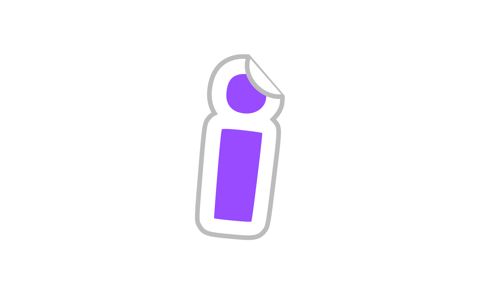Mikado on the other hand is:
- friendly but not wacky.
- casual but not eccentric.
- relaxed but not insensible.
Typefaces of this calibre normally do only 1 of 2 things, either they are great at large sizes (display type) or perform extremely well as text-type.
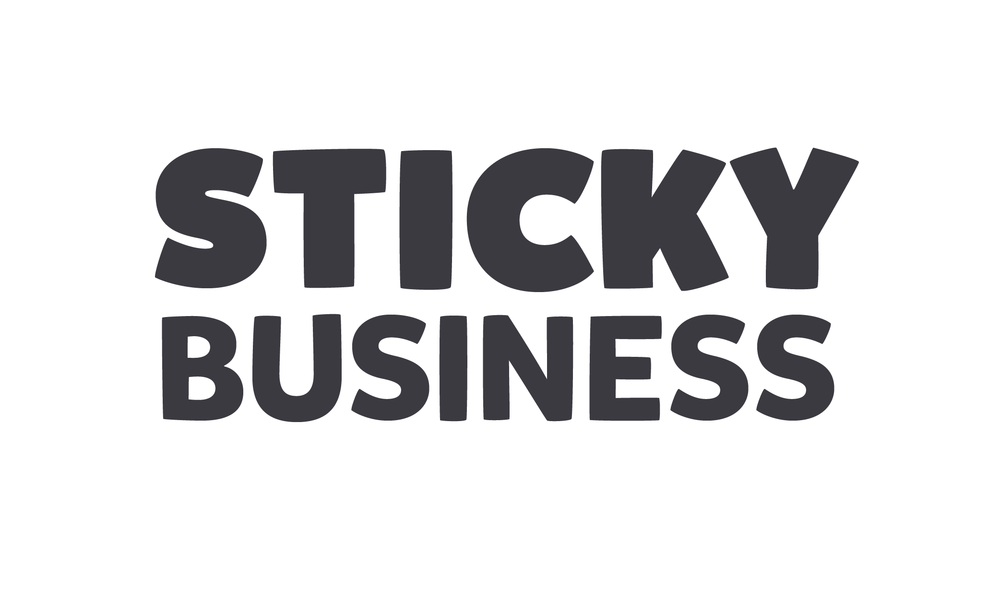Mikado is what is known as a work-horse typeface, this family can work both as a text face and as a display face. It is rare for a typeface like this to achieve what it does.
It is an efficient typeface that can be used on an assortment of things whilst retaining the general characteristic and charm of Sticky Business.
Who says efficiency is soulless?
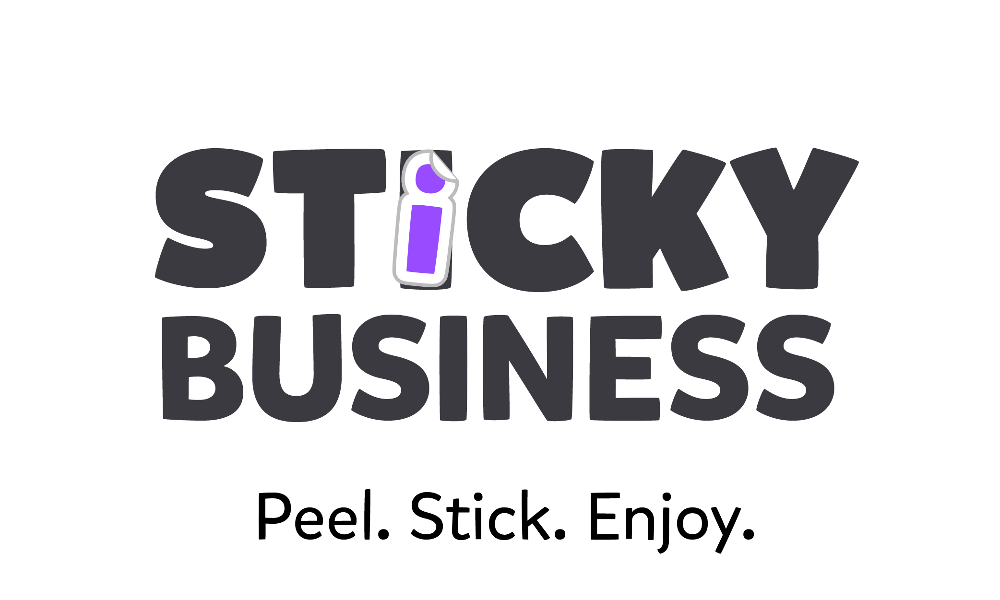